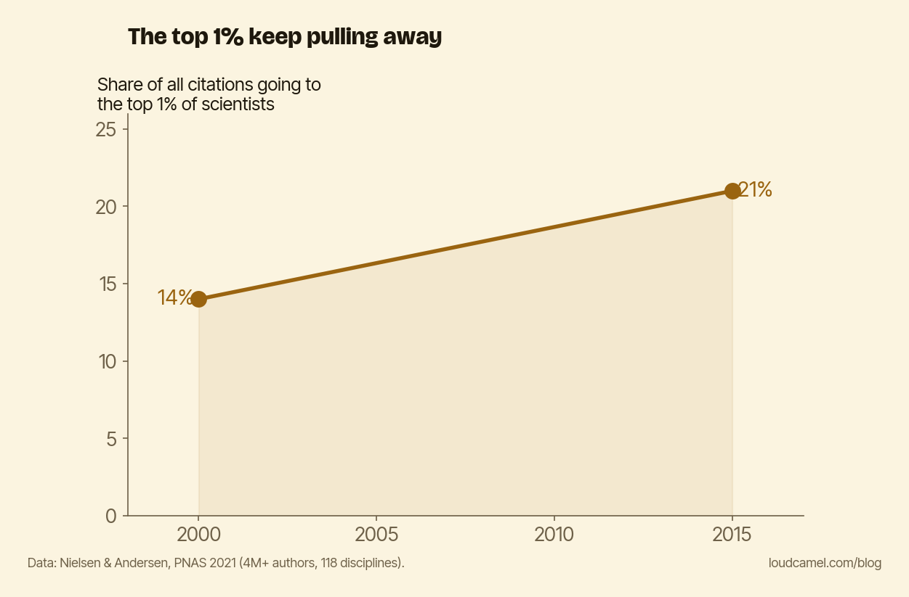

Citation inequality is widening, which is why 'above average' isn't the target
Here is the quiet bet a lot of good researchers are making: if my work is good, the citations will come. Do the science, publish it, and recognition arrives on its own schedule.
The data says that schedule is getting longer for almost everyone, and that is the point of this post. Attention is concentrating, the concentration is growing, and “above average” is no longer a target that buys you anything.
The elite are pulling away
Mathias Nielsen and Jens Peter Andersen tracked more than 4 million authors and 26 million papers across 118 disciplines from 2000 to 2015 (“Global citation inequality is on the rise,” PNAS, 2021). Over those fifteen years, the share of all citations going to the top 1% most-cited scientists rose from 14% to 21%. The Gini coefficient for citations climbed from 0.65 to 0.70.
Read that again. The top 1% went from collecting one citation in seven to one in five. The elite pulled further ahead, and ordinary scientists did not move.

The chart above shows the trend: the slice of citations claimed by the top 1% climbing steadily across the period. This is not a blip in one noisy year. It is a direction.
This is the shape of the whole system
You might hope your field is the exception. It probably is not. Filippo Radicchi, Santo Fortunato, and Claudio Castellano (“Universality of citation distributions,” PNAS, 2008) showed that once you rescale each field by its average number of citations, the citation distributions of very different disciplines collapse onto a single curve. One common, heavy-tailed shape underneath all of them.
The skew is not a quirk of high-energy physics or molecular biology. It behaves like a law of the system. A few papers absorb most of the attention, the long tail gets crumbs, and per the 2021 trend, that tail is getting longer relative to the head.
Why “above average” is the wrong goal
Here is where the quiet bet breaks. In a heavy-tailed distribution, the median paper is near-invisible. The average is dragged so far up by the handful of giants that being above average still leaves you deep in the silent middle. Moving from the 50th percentile to the 60th buys you almost nothing, because the action lives in the far right tail.
So quality matters, but not the way the bet assumes. Quality sets a floor. It is the price of admission, not the prize. It keeps your work from being wrong or ignorable. It does not, on its own, carry you across the gap between invisible and visible.
And that gap is the one with the real payoff. The disproportionate return is not in being slightly better than the next paper. It is in crossing from unseen to seen at all, getting your work in front of the specific people who can build on it and cite it. The mechanism by which early visibility compounds is the same one I described in the Daniel effect. As the distribution gets more skewed, that crossing gets more valuable, not less. The widening is the argument.
Do this this week
Stop aiming for above average. In this distribution, above average is still the invisible middle.
Take one paper you think deserved more attention than it got, and do exactly one concrete thing to move it from invisible to visible to its actual audience. Write a plain-language summary and post it where your readers actually look. Or email two people working on the adjacent problem and tell them, in three sentences, why your result is useful to them. The quality is already there. It was never the bottleneck.